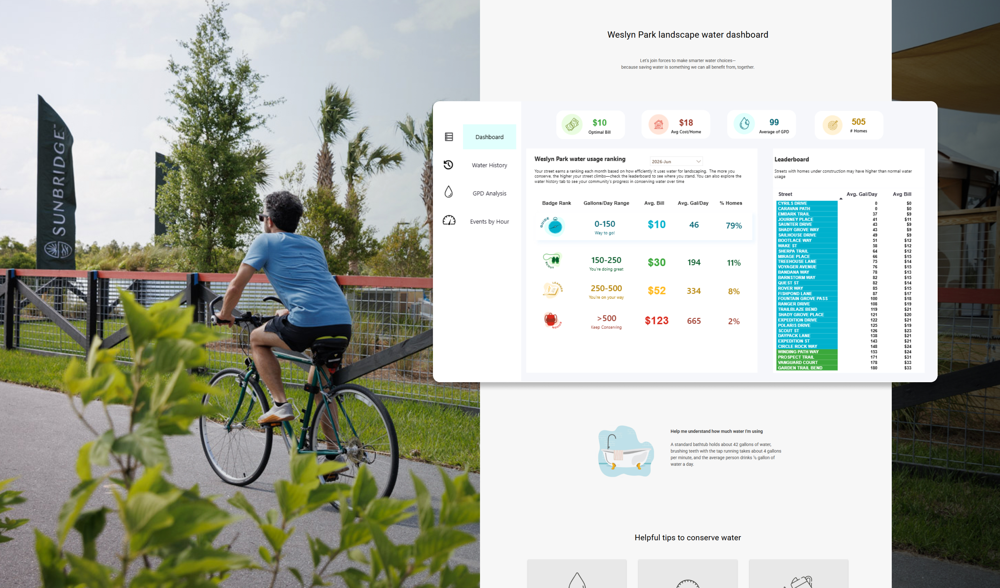
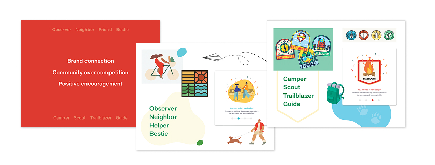
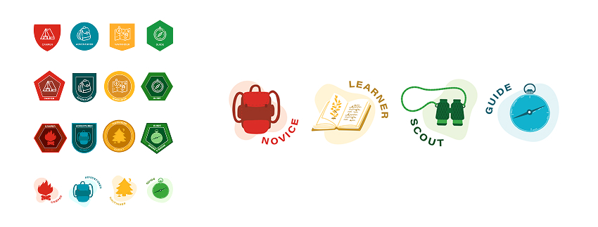
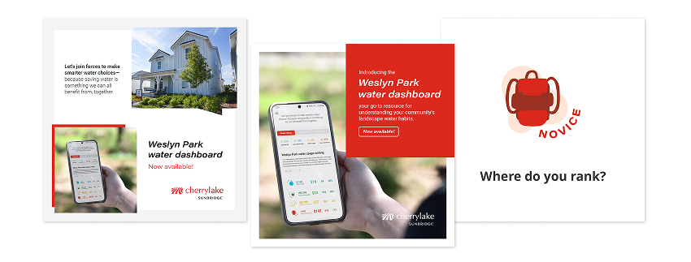
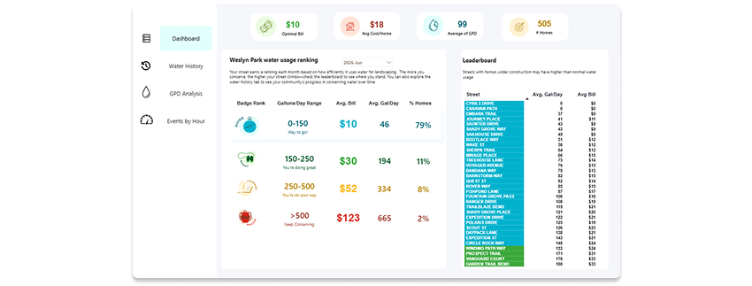

Water use is easy to ignore, right up until it’s not. At Weslyn Park, a new community built around the Sunbridge Stewardship District’s sustainability mission, the challenge was making an invisible, easy-to-ignore metric like irrigation water use visible, understandable, and something residents actually wanted to pay attention to.
I helped brainstorm the name with the marketing team, pitched the branding and visual direction, and designed the Water Dashboard: a live, gamified tool that turns real-time water usage data from Toho Water Authority into a simple, street-by-street ranking system residents can check, compare, and compete over. The project was featured in Cherrylake’s Annual Report as one of the company’s projects of the year and is live today at cherrylakecommunities.com/weslyn-park-water-dashboard.

The goal
Weslyn Park needed a way to show residents that low-water, native landscaping doesn’t mean sacrificing beauty; it means using water more intelligently. But that story only works if people can actually see the data behind it. The dashboard needed to:
- Turn real-time water usage data into something residents could understand at a glance
- Motivate behavior change through visibility and light competition, not guilt or penalties
- Give Toho Water Authority and Cherrylake’s landscape teams a practical tool to identify high water use, irrigation leaks, and opportunities to intervene
- Work within a hard technical constraint: the data lived in Power BI, and needed to be built and maintained by our Director of Budgeting and our Web Dev team, not a custom-built app
Naming and brand direction
Before any interface work started, this was a branding project. As a marketing team, we brainstormed names together, and from there, I put together a pitch with moodboards, presenting different naming and visual directions to bring stakeholders across four different organizations — Toho Water Authority, the Sunbridge Stewardship District, the Florida Headwaters Foundation, and Cherrylake senior leadership — into alignment on a shared direction.

Getting four organizations to agree on tone, name, and visual direction before a single dashboard screen was designed was its own project. That early alignment mattered: everyone who needed to champion the tool to their own audience had a hand in shaping it first.
One deliberate decision came out of that process: the branding shouldn’t feel like it came from Cherrylake. With four partner organizations involved, the identity needed to read as its own initiative, something Cherrylake supports and partners on, not something that belongs to any single one of us. That thinking shaped the naming direction, the moodboards, and ultimately the visual identity of the dashboard itself.
Designing the badge system
The centerpiece of the gamification strategy is the Water Badge: a monthly ranking assigned to every street based on the efficiency of residents’ landscape water use, from Novice to Learner to Scout to Guide.
I designed a range of badge concepts and options to bring back to stakeholders, iterating on tone, form, and level of playfulness until we landed on a system that felt encouraging rather than punitive, more scout-troop achievement than report card.

The ranking language was deliberately chosen to describe a journey rather than a score. “Novice” doesn’t feel like failure, it feels like a starting point. That framing turned out to matter a lot once the dashboard actually launched.
Designing the dashboard
With the brand and badge system locked, I moved into designing the dashboard itself, the tool residents would actually use to see how their street was doing.

This is where the Power BI constraint came in. The dashboard needed to run on a platform our Director of Budgeting could build and maintain long-term, not a fully custom interactive product. Rather than treat that as a limitation, I found a Power BI template that could be adapted to carry the badge system and visual identity while staying realistic to build and support in-house. Good design often comes from working within real constraints, not around them, and this was a clear case of that: the dashboard needed to be sustainable for the team maintaining it, not just impressive as a first release.
Building the hype: social graphics
To launch the dashboard and get the community actually looking at it, I designed a set of social media graphics for Weslyn Park’s community Facebook group, introducing the badge system and encouraging residents to check where their street landed.

It worked faster than expected: within fifteen minutes of launch, neighbors were already posting in the Facebook group, cheering on the streets that had earned top rankings. That kind of unprompted, peer-to-peer encouragement was exactly the behavior the gamification strategy was designed to spark.
The results
The dashboard didn’t just create engagement. It coincided with real, measurable change in water use across the community.
- Landscapes in Weslyn Park use about 61% less water than a conventional landscape.
- Between April and September of the dashboard’s first season, average daily irrigation use across the community dropped from 316 gallons per day to 152 gallons per day, a 52% reduction.
- Residents on Cherrylake’s Total Garden Service used, on average, 22% less water than the rest of the neighborhood, showing the added value of professional landscape management on top of the awareness the dashboard created.
Beyond resident behavior, the dashboard gave both Toho Water Authority and Cherrylake’s own teams a working tool: Toho can identify high water users and follow up directly with conservation tips, while Cherrylake’s landscape teams can spot irrigation leaks and track how the landscapes they maintain are actually performing over time.
Impact
The Water Dashboard turned a utility metric into a community story, one residents wanted to share rather than avoid. It was recognized in Cherrylake’s Annual Report as one of the company’s projects of the year, and it’s become a model the company can bring to other water authorities as proof of what’s possible when usage data is made accessible to the people who can actually act on it: data sparks awareness, awareness leads to action, and action creates real, measurable change.